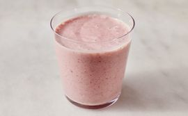

Kaša od jagoda

Opis
Recept za ukusnu kašu od jagoda.
Sastojci:
- 1 šolja sojinog mleka
- pola šolje ovsene kaše
- 14 smrznutih jagoda
- 1 iseckana banana
- Po ukusu pola kašičice belog šećera
- Po ukusu pola kašičice ekstrakta od vanile
Uputstvo:
- Blendirajte sojino mleko, ovsenu kašu, jagode i banane u blenderu dok ne postane glatko. Dodajte šećer i ekstrakt vanile i blendirajte dok ne postane glatko.
Početna strana